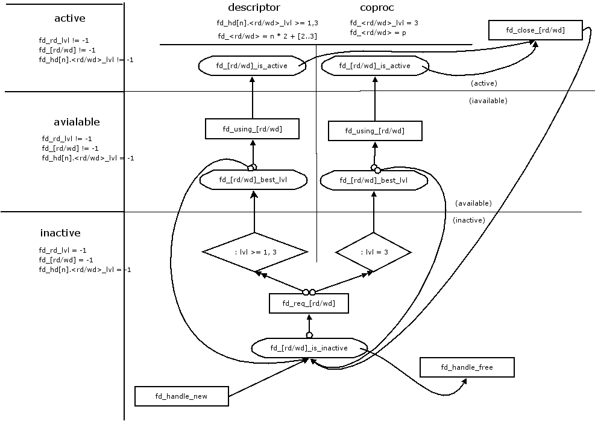

I am Michael Mattie, a Senior Software Engineer on the West Coast. I love programming: particularly in Python and LISP. Professionally I like working on the backend at scale.
Here are some of my code samples and projects. Most of the samples are gists since they are only a file or two and not really intended for collaberation. Peruse the menu below.
I was investigating the Heap Sort algorithm for sorting in place with heaps. During my implementation of the algorithm from Essential Algorithms by Rod Stephens I discovered that the book's algorithm was producing broken heaps. I was able to modify the algorithm and correct the problem, but I found that even with other algorithms such as the Wikipedia/MIT version there were still broken heaps.
My heapsort.py implements the three versions and benchmarks them. My conclusion is that the broken heaps are tolerated in the MIT version which pushes values down, but not in the Essential Algorithms which pushes values up.
I decided to implement the merge-sort algorithm as it looked like the first algorithm that was LISP friendly since it consisted of merging lists. I also wrote common lisp for the first time.
The algorithm worked when I implemented it but the performance seemed terrible. I analyzed the algorithm and determined that the operations like append that work at the end of lists are O(n) for every operation. I wrote a queue implementation that resulted in a 44x speedup, and memery usage went from 1.5Gb to 2Mb.
Here is the difference on a sort of 10,000 elements.
DEFAULT LIBRARY FUNCTIONS
merge-sort.lisp -> running now
Evaluation took:
0.402 seconds of real time
0.401896 seconds of total run time (0.374674 user, 0.027222 system)
[ Run times consist of 0.012 seconds GC time, and 0.390 seconds non-GC time. ]
100.00% CPU
888,749,204 processor cycles
1,599,489,264 bytes consed
sorted = to long to print
MY QUEUE FUNCTIONS
merge-sort.lisp -> running now
Evaluation took:
0.009 seconds of real time
0.008828 seconds of total run time (0.008275 user, 0.000553 system)
100.00% CPU
19,489,098 processor cycles
2,752,416 bytes consed
sorted = to long to print
FutureTask was the implementation of a library interface for running tasks that complete at some time in the future. I wrote it so you could instantiate a task and it would schedule it for execution in a worker queue implementation in the class static.
rc is a wrapper around version control systems that I wrote because I was using so many different version control systems including git, darcs, and perforce at the time. It references "Fault" a library not provided that classified exceptions and provided a general mechanism for handling them.
parser.el is a project from my early LISP days to create a parser compiler in ELisp. It used a number of advanced techniques such as macros, co-routines, and greedy packing of symbol streams to implement a PEG compiler that produces code that looks human written.
I was attempting to do some program verification on some shell code and I wrote this diagram defining the states of the program and the transitions along with constraints on variables in the states.
A sophisticated byte-compiled Z shell library for allocating file handles for regular processes and co-processes.
I worked on naturual language parsing in a project to perform banking actions via SMS. The project never took off but I learned alot about clojure.
I needed to make some edits in mulitple files so I devised a scheme to run them through sed and make the necessary changes with one script. This is the result.